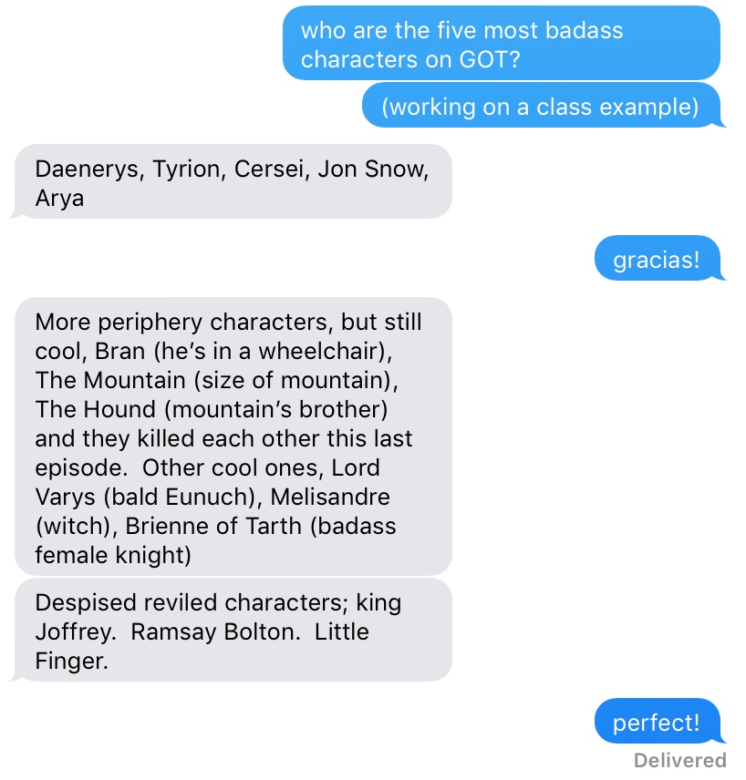

The Plan
Contents
The Plan¶
Tools: Scientific Computing + Open Source
Improvement: Documentation, Code Style, Code Testing, Code Projects
Last Bits: Advanced Python, Wrap Up
APIs¶
modules
review
module APIs
RESTful APIs
LISC
Twitter API
Application Programming Interface¶
If you are pointing and clicking on computer applications, that is not an API.
If you are writing code to interact with software and get information, that IS an API.
Module APIs¶
Modules have an API. Every time you write or use a set of functions and/or classes, you are writing or using an API.
Quick Review: Modules¶
Modules are stored in Python files. We can import these files into our namespace, to gain access to the module within Python.
# Import & use the math module
import math
math.sqrt(9)
3.0
Imports: from & as¶
# Import a specific object from a module
from random import choice
# use random.choice
magic_8_ball = ['As I see it, yes!', 'Most likely.',
'Ask again later.', 'Don\'t Count on it',
'Outlook not so good']
choice(magic_8_ball)
'Ask again later.'
# Import a specific object from a module using an alias
from random import choice as ch
# use shorter name
ch(magic_8_ball)
'Most likely.'
Importing Custom Code¶
# Import a class class from an external module
from remote import MyNumbers
# Define an instance of our custom class
# apply method
out = MyNumbers(2, 3).add()
out
5
# remember we only imported MyNumbers
choice?
Module APIs¶
Modules have an API. Every time you write or use a set of functions and/or classes, you are writing or using an API.
Clicker Question #1¶
What will the following code snippet print out:
def foo(a, b, c=0):
d = c
for e in a[:b]:
d += e
return d
print(foo(b=2, a=[10, 10, 10, 10]))
20
A) 10
B) 20
C) 30
D) 40
E) None
Clicker Question #2¶
How easy did you find interpreting this code?
A) Easy
B) Fairly Easy
C) Neutral
D) Somewaht Difficult
E) Difficult
Arguably, this function does not have a good API.
Function with Fixed Names¶
Clicker Question #3¶
What will the following code snippet print out:
def sum_across_list(list_to_count, end_index, start_val = 0):
running_count = start_val
for element in list_to_count[:end_index]:
running_count += element
return running_count
print(sum_across_list(end_index = 2, list_to_count = [10, 10, 10, 10]))
20
A) 10
B) 20
C) 30
D) 40
E) None
Clicker Question #4¶
How easy did you find interpreting this code?
A) Easy
B) Fairly Easy
C) Neutral
D) Somewaht Difficult
E) Difficult
This is the same function, but has a better API.
Names Matter!¶
When writing an API, you are designing the user facing code that a programmer (maybe you in the future) will use.
When using an API, you are using the programmer-facing code that someone else wrote for the task.
Taking time to have good names and clear documentation can really help a programmer interact with an API.
Clicker Question #5¶
Improve the code below’s API:
class G():
def __init__(self, f, l=None):
self.f = f
self.l = l
def ib(self):
b1 = ['Tyrion', 'Cersei', 'Jon', 'Arya']
b2 = ['Bran', 'The Mountain', 'The Hound', 'Lord Varys',
'Melisandre', 'Brienne of Tarth']
b3 = ['King Joffrey', 'Ramsay', 'Little Finger']
if self.f is 'Arya':
o = 'Super BAMF!'
elif self.f in b1:
o = 'Definitely a badass'
elif self.f in b2:
o = 'We\'ve got ourselves a tier 2 badass!'
elif self.f in b3:
o = 'Ew! Despised and reviled.'
else:
o = 'meh. could be a badass?'
return o
G('Ramsay').ib()
'Ew! Despised and reviled.'
A) I made it all better!
B) I made it slightly better!
C) I think it’s fine as it is.
D) Super lost
G('Ramsay').ib()
'Ew! Despised and reviled.'
# our improved answer
class GameOfThrones():
def __init__(self, name):
self.name = name
def describe(self):
list_badass = ['Tyrion', 'Cersei', 'Jon', 'Arya']
list_tier2 = ['Bran', 'The Mountain', 'The Hound', 'Lord Varys',
'Melisandre', 'Brienne of Tarth']
list_noway = ['King Joffrey', 'Ramsay', 'Little Finger']
if self.name is 'Arya':
output = 'Super BAMF!'
elif self.name in list_badass:
output = 'Definitely a badass'
elif self.name in list_tier2:
output = 'We\'ve got ourselves a tier 2 badass!'
elif self.name in list_noway:
output = 'Ew! Despised and reviled.'
else:
output = 'meh. could be a badass?'
return output
GameOfThrones('The Mountain').describe()
"We've got ourselves a tier 2 badass!"
## example answer
class GameOfThrones():
def __init__(self, first, last = None):
self.first = first
self.last = last
def is_badass(self):
badass = ['Tyrion', 'Cersei', 'Jon', 'Arya']
tier2_badass = ['Bran', 'The Mountain', 'The Hound', 'Lord Varys',
'Melisandre', 'Brienne of Tarth']
not_badass = ['King Joffrey', 'Ramsay', 'Little Finger']
if self.first is 'Arya':
out = 'Super BAMF!'
elif self.first in badass:
out = 'Definitely a badass'
elif self.first in tier2_badass:
out = 'We\'ve got ourselves a tier 2 badass!'
elif self.first in not_badass:
out = 'Ew! Despised and reviled.'
else:
out = 'meh. could be a badass?'
return out
GameOfThrones('Daenerys').is_badass()
'meh. could be a badass?'

Web APIs¶
APIs are an interface to interact with an application, designed for programmatic use :
They allow systematic, controlled access to (for example) an applications database and procedures
They can be used to request data and/or to request that the the application perform some procedure
EUtils API¶
EUtils: Search¶
Search a database to get information we want it to return
# Set the base URL for the e-utils API
# where you go to query information from this web address
base_url = 'http://eutils.ncbi.nlm.nih.gov/entrez/eutils/'
Build a URL like a Python function call…
We’re just adding some additional ‘parameters’.
# Set the information we need for launching a search request
search = 'esearch.fcgi?'
term = 'term=' + 'brain'
Interacting with APIs specifies that we follow the rules specified by the API from which we’re requesting information.
EUtils: Fetch¶
# Build the full search URL
search_url = base_url + search + term
print(search_url)
http://eutils.ncbi.nlm.nih.gov/entrez/eutils/esearch.fcgi?term=brain
# Set the information we need for launching a fetch request
fetch = 'efetch.fcgi?'
db = 'db=' + 'pubmed'
retmode = '&retmode=' + 'xml'
pubmed_id = '&id=' + str(30439964)
# Build the full search URL
fetch_url = base_url + fetch + db + retmode + pubmed_id
print(fetch_url)
http://eutils.ncbi.nlm.nih.gov/entrez/eutils/efetch.fcgi?db=pubmed&retmode=xml&id=30439964
But, our goal isn’t to see this information in a web browser. Web browsers are for humans. We want to use this information computationally…
Requesting Web Pages from Python¶
To accomplish API interactions, we need to use HTTP requests.
# The requests module allows you to send URL requests from python
import requests
# Beautiful Soup has functions to 'clean up' returned web pages into human-friendlier formats
from bs4 import BeautifulSoup
EUtils Search, through Python¶
print(search_url)
http://eutils.ncbi.nlm.nih.gov/entrez/eutils/esearch.fcgi?term=brain
# Request the search page, and parse
search_page = requests.get(search_url)
search_content = BeautifulSoup(search_page.content, 'xml')
# Check out the content of the returned page
search_content
<?xml version="1.0" encoding="utf-8"?>
<!DOCTYPE eSearchResult PUBLIC "-//NLM//DTD esearch 20060628//EN" "https://eutils.ncbi.nlm.nih.gov/eutils/dtd/20060628/esearch.dtd">
<eSearchResult><Count>1918610</Count><RetMax>20</RetMax><RetStart>0</RetStart><IdList>
<Id>31739380</Id>
<Id>31739316</Id>
<Id>31739314</Id>
<Id>31739299</Id>
<Id>31739290</Id>
<Id>31739282</Id>
<Id>31739269</Id>
<Id>31739238</Id>
<Id>31739234</Id>
<Id>31739187</Id>
<Id>31739167</Id>
<Id>31739162</Id>
<Id>31739156</Id>
<Id>31739114</Id>
<Id>31739112</Id>
<Id>31739106</Id>
<Id>31739099</Id>
<Id>31739096</Id>
<Id>31739095</Id>
<Id>31739086</Id>
</IdList><TranslationSet><Translation> <From>brain</From> <To>"brain"[MeSH Terms] OR "brain"[All Fields]</To> </Translation></TranslationSet><TranslationStack> <TermSet> <Term>"brain"[MeSH Terms]</Term> <Field>MeSH Terms</Field> <Count>1178507</Count> <Explode>Y</Explode> </TermSet> <TermSet> <Term>"brain"[All Fields]</Term> <Field>All Fields</Field> <Count>1531532</Count> <Explode>N</Explode> </TermSet> <OP>OR</OP> <OP>GROUP</OP> </TranslationStack><QueryTranslation>"brain"[MeSH Terms] OR "brain"[All Fields]</QueryTranslation></eSearchResult>
EUtils Fetch, through Python¶
print(fetch_url)
http://eutils.ncbi.nlm.nih.gov/entrez/eutils/efetch.fcgi?db=pubmed&retmode=xml&id=30439964
# Request the fetch page, and parse
fetch_page = requests.get(fetch_url)
fetch_content = BeautifulSoup(fetch_page.content, 'lxml')
# Check out the content of the page
# fetch_content
BeautifulSoup Objects¶
# Our 'fetch_content' variable is a custom BeautifulSoup object
type(fetch_content)
bs4.BeautifulSoup
# We can use some methods to access particular information
fetch_content.find('year').text
'2019'
Literature Scanner¶
But when making HTTP requests it can be difficult to figure out exactly what URL needs to be specified and how to get the contents back out.
So, often in Python we’ll interact with an API indirectly. There are packages that will use methods and objects to make this easier on us.
LISC : Literature Scanner is a tool for automated meta-analyses of scientific literature (https://github.com/lisc-tools/lisc)
# uncomment and run to have the following
# example work in your notebook
# !pip install --user git+https://github.com/lisc-tools/lisc.git
# Import LISC - Words
from lisc import Words
# Initialize Words object & set some search terms
words = Words()
words.add_terms(['brain'])
# Run words scrape
words.run_collection(retmax = '5')
LISC: Words Data¶
# Check out some information from our scraped data
for art in words['brain']:
print(art['title'])
Catalpol and Mannitol, Two Components of Rehmannia glutinosa, Exhibit Anticonvulsant Effects Probably via GABAA Receptor Regulation.
Bedside Optic Nerve Ultrasonography for Diagnosing Increased Intracranial Pressure: A Systematic Review and Meta-analysis.
Metal-containing Particulate Matter and Associated Reduced Olfactory Identification Ability in Children from an Area of High Atmospheric Exposure in Mexico City.
Disturbed flow disrupts the blood-brain barrier in a 3D bifurcation model.
Machine learning validation of EEG+tACS artefact removal.
Twitter API¶
# to use this on your computer
# uncomment and run following line
# !pip install tweepy
Then, follow the instructions here for authetication of tweepy with Python.
# Accessing Twitter API from Python
# Note: to run this, you will have to fill in stw.py with your OAuth credentials.
# You can do that here: https://apps.twitter.com/
# Import tweepy to access API
import tweepy
from tweepy import OAuthHandler
# Import my API credentials
from stw import *
# Twitter API requires Authentification with OAuth
auth = OAuthHandler(CONSUMER_KEY, CONSUMER_SECRET)
auth.set_access_token(ACCESS_TOKEN, ACCESS_TOKEN_SECRET)
# # Create an API object to access Twitter
api = tweepy.API(auth)
for status in tweepy.Cursor(api.home_timeline).items(3):
# Process a single status
print(status.user.name)
print(status.text, '\n')
Ben Marwick
@kearneymw @harlyjaned Yes, well put! @cboettig Matthew Lincoln & I similarly wrote about why #rstats pkgs make sen… https://t.co/dh45iqwz2j
Nicholas Hunt-Walker
RT @reydelhumo: ¿Tanta bronca le tienen a las mujeres que si hay un evento de programación exclusivo para ellas la gente te quiere *denunci…
Corey J. Miles
Am I the only one who will see a page full of reviewer comments and start second guessing if I even want to publish this paper anymore?
Software Versioning¶
When you make changes to the software you’ve released into the world, you have to change the version of that software to let people know changes have occurred.
Versioning Schemes¶
The rules, if you’re new to this can be dizzying, so we’ll simplify for now:
<MAJOR>.<MINOR>i.e. 1.3
<MAJOR>.<MINOR>.<MAINTENANCE>i.e. 1.3.1
<MAJOR>- increase by 1 w/ incompatible API changes<MINOR>- increase by 1 w/ added functionality in a backwards-compatible manner<MAINTENANCE>- (aka patch) inrease by 1 w/ backwards-compatible bug fixes.
In Python package development… when <MAJOR> == 0, suggests a package in development
# see version information
!pip show lisc
Name: lisc
Version: 0.1.1
Summary: Literature Scanner
Home-page: https://github.com/lisc-tools/lisc
Author: Thomas Donoghue
Author-email: tdonoghue.research@gmail.com
License: Apache License, 2.0
Location: /Users/shannonellis/.local/lib/python3.6/site-packages
Requires: beautifulsoup4, numpy, nltk, lxml, requests
Required-by:
# see version information
import lisc
lisc.__version__
---------------------------------------------------------------------------
ModuleNotFoundError Traceback (most recent call last)
<ipython-input-1-f48bb67988f4> in <module>()
1 # see version information
----> 2 import lisc
3 lisc.__version__
ModuleNotFoundError: No module named 'lisc'